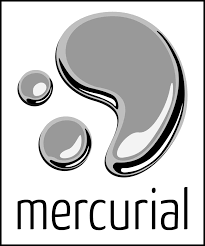
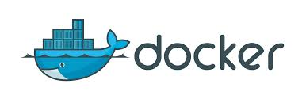

Zintegrowane środowisko
automatyzujące procesy
wytwarzania oprogramowania w
zespołach
Jacek Hojczak
Wyższa Szkoła Informatyki Stosowanej i Zarządzania
Presentation powered by Reveal.js
Agenda
- Wstęp
- Motywacja
- Kryteria doboru narzędzi
- Analiza narzędzi
- Integracja narzędzi
- Testy kompatybilności
- Podsumowanie
Wstęp
- Procesy wytwarzania oprogramowania
- Automatyzacja
- Cele pracy
Motywacja
- Alternatywa dla małych i średnich firm
- Z minimalizowanie czasu poświęconego na
pracę "wokół produktu" - Open Source
Kryteria doboru narzędzi
- Open Source
- Linux
- Self-hosted
- Możliwość integracji z ekosystemem firmy tzn. LDAP(AD),email
- Wsparcie
Analiza narzędzi
Wedułg funkcji narzędzi
- Repozytorium kodu źródłowego
- Przegląd kodu/zarządzanie kodem
- Ciągła integracja (CI)
- Repozytorium binariów
Repozytorium kodu źródłowego
Przegląd kodu/zarządzanie kodem
Ciągła integracja i ciągłe dostarczanie (CI/CD)
Repozytorium binariów
Integracja narzędzi
Docker
konfiguracja środowiska za pomocą narzędzi
- bash
- docker-compose
- saltstack?
Testy kompatybilności
Różne dystrybucje linuxa
- Fedora
- CentOS
- Ubuntu
- Debian
Podsumowanie
- osiągnięcie założonych celów
- możliwości rozwoju